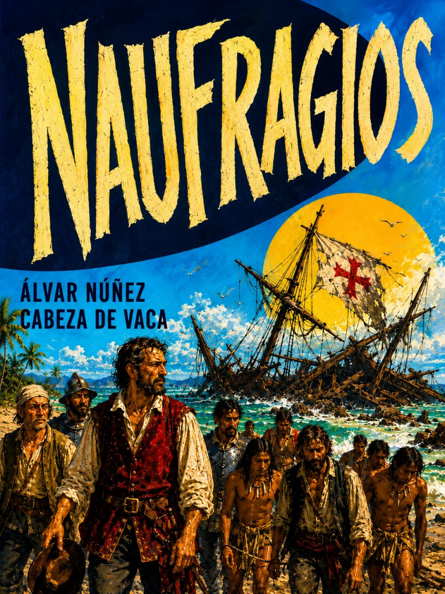

SINOPSIS
El fracaso de la expedición de Pánfilo de Narváez transforma una empresa de conquista en una lucha por sobrevivir. Cabeza de Vaca relata hambre, cautiverio, intercambios y curaciones durante su recorrido por tierras norteamericanas, hasta el encuentro con otros españoles en 1536. Los pueblos indígenas no son un fondo del viaje: sus alimentos, conocimientos y redes de relación hacen posible la supervivencia de los forasteros.
La experiencia llega al lector a través de una voz que selecciona, interpreta y justifica sus actos. El relato permite estudiar tanto esas relaciones de dependencia como la construcción de la autoridad del narrador. Su primera edición apareció en Zamora en 1542; la edición de Valladolid de 1555 lo reunió con los Comentarios.
Texto de consulta: Biblioteca Virtual Miguel de Cervantes, edición digital basada en Valladolid, 1555.
CAPÍTULOS
El naufragio de la expedición
Esclavo entre los pueblos de la costa
Comerciante y curandero
La travesía hacia el poniente
El reencuentro con los suyos
RESEÑAS

Excelente